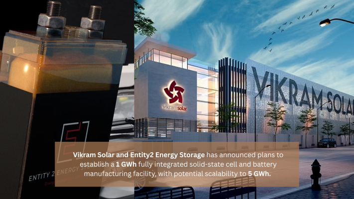
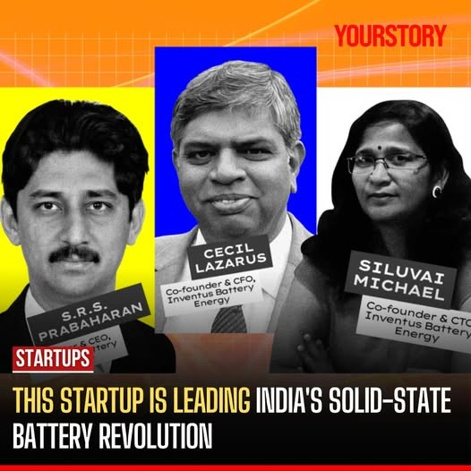
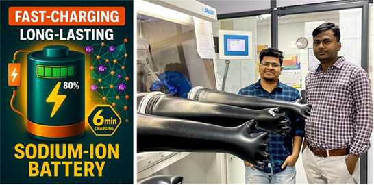
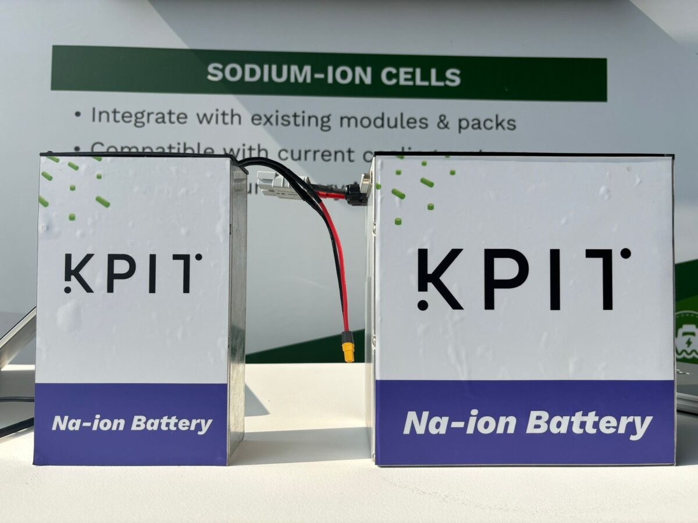
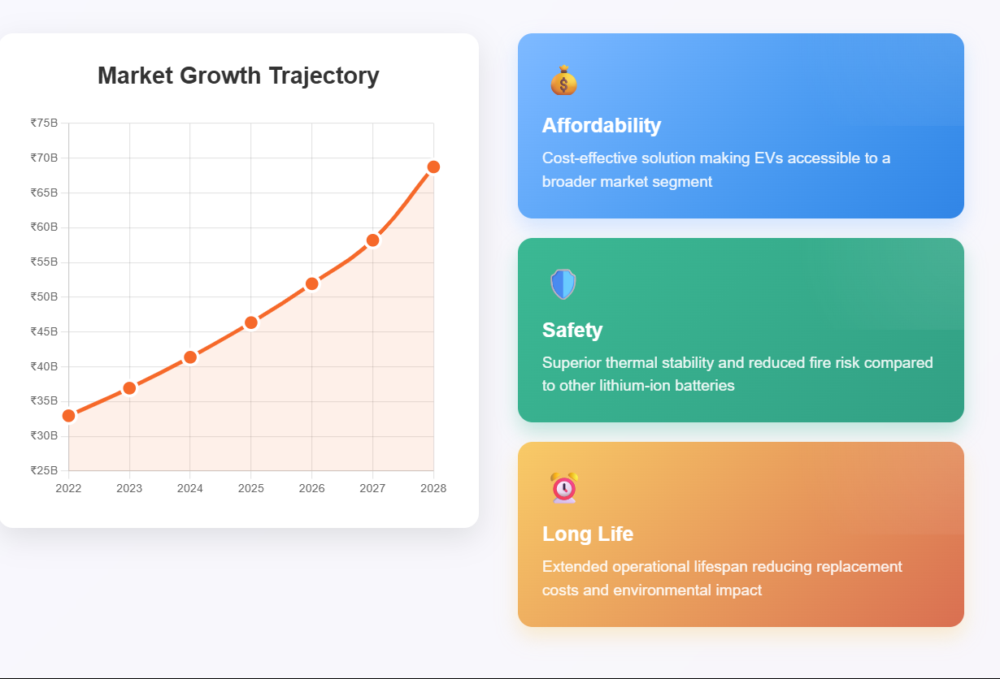
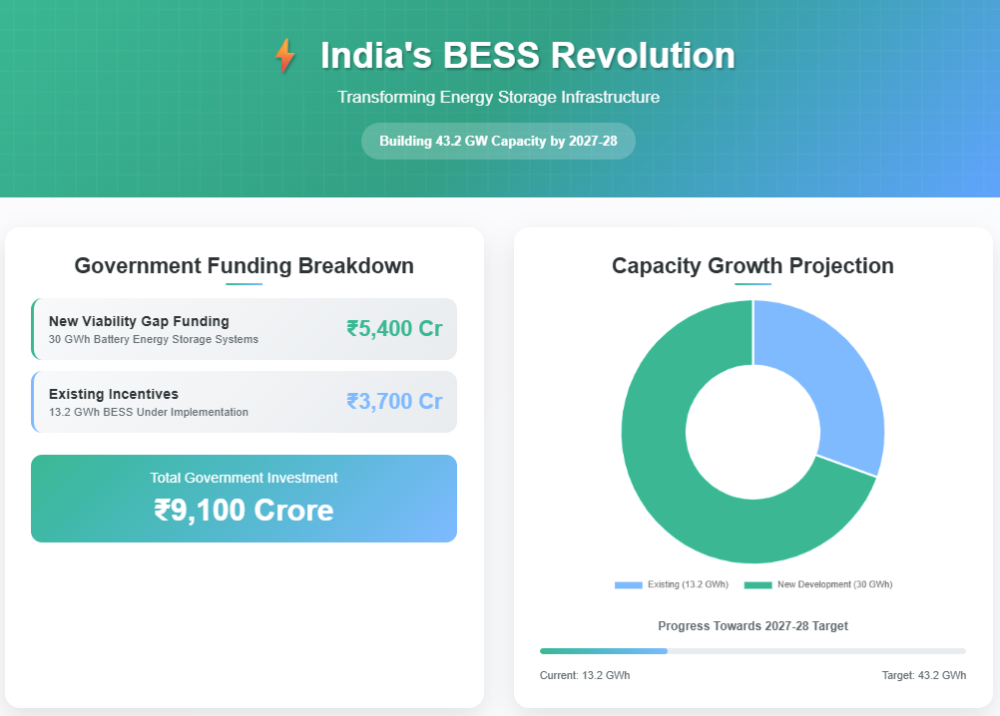
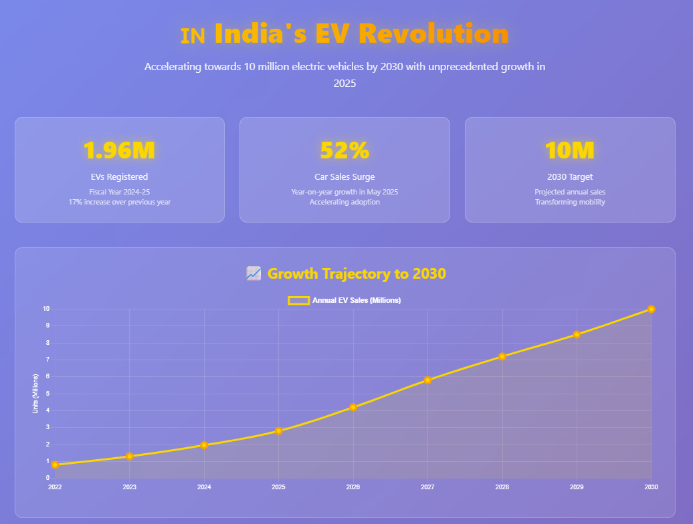
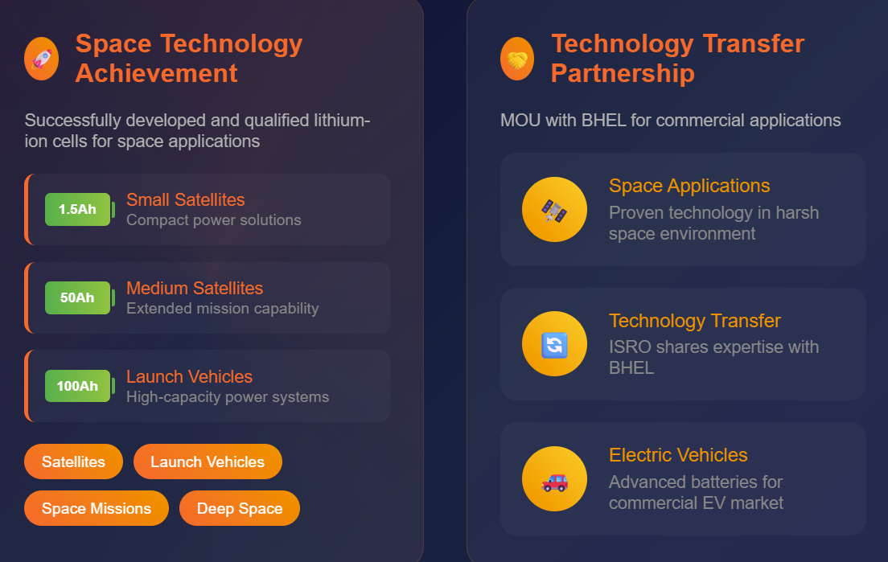

India stands at a critical juncture in its battery technology evolution, with emerging next-generation chemistries promising to transform the country's energy storage landscape. As the nation pursues its ambitious targets of 500 GW renewable energy capacity by 2030 and aims for energy independence by 2047, three key battery technologies are emerging as game-changers: solid-state batteries, sodium-ion batteries, and lithium iron phosphate (LFP) batteries.
Solid-State Batteries: The Safety Revolution
Solid-state battery technology represents the frontier of energy storage innovation in India. Vikram Solar has announced plans to establish a 1 GWh fully integrated solid-state cell and battery manufacturing facility, with potential scalability to 5 GWh. This groundbreaking initiative, developed in partnership with Entity 2 Energy Storage, utilizes proprietary non-lithium solid-state battery technologies that are predominantly manufactured with India-made components, supporting the nation's Atmanirbharta (self-reliance) mission.

The advantages of solid-state batteries are compelling for India's demanding climate conditions. These batteries offer higher power storage due to minimal loss of electroactive metal and significantly reduced risk of fire and overheating. They operate effectively across wide temperature ranges without dendrite formation and provide stable performance for up to 10,000 cycles. Perhaps most importantly for Indian conditions, they remain stable at charge rates up to 5C, enabling full recharging in just 12 minutes.
Chennai-based startup Inventus Battery Energy Technologies is aggressively pursuing solid-state battery commercialization, with plans to bring their technology to market by 2026. The company's CEO emphasizes that winning the solid-state battery race is crucial for India's energy future, positioning the country as a global leader in this emerging technology.

Sodium-ion Batteries: India's Self-Reliance Solution
The sodium-ion battery revolution in India has achieved a significant milestone with scientists at JNCASR developing an ultra-fast charging sodium-ion battery that can charge to 80% in just six minutes and endure over 3,000 charge cycles. This breakthrough technology, led by premkumar senguttuvan and Ph.D. scholar Biplab Patra , utilizes a NASICON-type cathode and anode structure with advanced material engineering techniques.

The strategic importance of sodium-ion technology for India cannot be overstated. Unlike lithium, sodium is abundantly available domestically, potentially reducing India's dependence on lithium imports and addressing geopolitical supply chain risks. The technology promises 15-20% lower overall costs compared to lithium-ion batteries while offering superior thermal stability and safety characteristics.
KPIT Technologies and Trentar Energy Solutions have announced a collaboration to commercialize sodium-ion battery technology, with KPIT transferring its new sodium-ion battery technology that claims extended lifespan and faster charging capabilities. This partnership represents a significant step toward scaling sodium-ion production in India.

Research institutions across India are making substantial contributions to sodium-ion development. IIT Bombay researchers claimed a breakthrough in May 2023, addressing challenges of air-water instability and structural-cum-electrochemical instability in sodium-ion cathode materials. These advancements are expected to drive cost-effective and sustainable energy storage systems across multiple applications.
LFP Batteries: The Practical Choice
Lithium Iron Phosphate (LFP) batteries are rapidly gaining traction in India's electric vehicle ecosystem due to their affordability, safety, and long operational life. The Indian LFP battery market was valued at INR 32.95 billion in 2022 and is projected to reach INR 68.75 billion by 2028, expanding at a CAGR of approximately 12.05%.

Leading EV manufacturers and battery suppliers in India are increasingly adopting LFP technology, particularly for two-wheelers, three-wheelers, and light commercial vehicles. The technology's appeal lies in its use of iron and phosphate, which are abundantly available and significantly cheaper than cobalt or nickel used in traditional lithium-ion batteries.
LFP batteries demonstrate superior thermal and chemical stability, making them ideal for India's hot and varied climate conditions. With cycle lives often exceeding 4,000 full charges, LFP batteries offer longer operational life compared to many alternatives, reducing the need for costly battery replacements and improving total cost of ownership.
Government Support and Policy Framework
The Indian government has demonstrated strong commitment to next-generation battery technologies through comprehensive policy support. The Union Budget 2025 eliminated Basic Customs Duty on critical battery manufacturing materials and introduced exemptions for 35 essential manufacturing capital goods. This policy shift directly reduces operational costs for domestic manufacturers, providing significant competitive advantages.
India's Production-Linked Incentive (PLI) scheme for advanced chemistry cell batteries has allocated over ₹18,000 crore, with the country on track to achieve 25 GWh battery production capacity by 2025, scaling to 50 GWh by 2030. Major industry players including Reliance Industries Limited , Ola Electric , Tata Group , and Exide Industries Limited are actively participating in expanding lithium-ion battery manufacturing capacities.

The government has also announced a viability gap funding worth ₹5,400 crore for developing 30 GWh of new battery energy storage systems (BESS), in addition to existing incentives of ₹3,700 crore for 13.2 GWh of BESS currently under implementation. This initiative is expected to attract investments worth ₹33,000 crore and positions India to achieve 43.2 GW of BESS capacity by 2027-28.
Market Projections and Opportunities
India's battery energy storage market is experiencing unprecedented growth. The BESS market is projected to expand from less than 0.2 GW currently to 66 GW by 2032, representing a sevenfold increase in capacity and creating a ₹5 lakh crore investment opportunity. This expansion is driven by India's ambitious renewable energy targets and the need for grid stability as intermittent renewable sources increase.
Annual EV sales in India could approach 10 million units by 2030, with electric vehicle adoption accelerating significantly in 2025. India's EV market crossed a milestone with 1.96 million EVs registered in fiscal year 2024-25, representing a 17% increase over the previous year. The electric two-wheeler segment led growth with 1.14 million units sold, while electric car sales surged 52% year-on-year in May 2025.

Supply Chain Challenges and Solutions
Despite promising developments, India faces significant supply chain challenges. The country lacks reserves of nickel, cobalt, and lithium, which are high-cost raw materials in electric vehicle batteries. Currently, India meets only 13% of its battery cell demand through domestic production, with the remainder fulfilled by imports.
China's dominance of the global battery supply chain presents both challenges and opportunities for India. China controls 85% of the world's battery cell production capacity and over 90% of anode and cathode manufacturing. However, China's current overcapacity issues create opportunities for Indian companies to compete more effectively.
To address these challenges, Indian research institutions are developing innovative solutions. DRDO and ISRO are collaborating on alternative battery technologies including metal-ion and metal-air batteries to reduce dependence on lithium. The focus on developing indigenous battery technologies using abundant domestic materials like aluminum, zinc, and iron ore represents a strategic approach to supply chain security.
Research and Development Ecosystem
India's academic and research institutions are at the forefront of battery technology development. The Indian Institute of Science (IISc), National Chemical Laboratory (NCL), JNCASR, CSIR-CECRI, and multiple IITs are actively engaged in developing efficient energy storage systems. These institutions are working on diverse battery chemistries including Li-ion, Na-ion, metal-air, and flow batteries.
ISRO's Vikram Sarabhai Space Centre has successfully developed and qualified lithium-ion cells ranging from 1.5Ah to 100Ah for satellites and launch vehicles, demonstrating India's capability in advanced battery technology. The space agency has signed an MOU with BHEL to manufacture Li-ion batteries for electric vehicles, facilitating technology transfer from space applications to commercial markets.

Patent activity in battery technology is increasing, with LG Corp holding the most battery-related patents in India with 22 patents published between 2002 and 2022. However, the rising number of patent filings by Indian entities indicates growing domestic innovation in the battery sector.
The Road Ahead
India's next-generation battery technology landscape presents both unprecedented opportunities and significant challenges. The convergence of solid-state, sodium-ion, and LFP technologies offers multiple pathways to energy independence and technological leadership. With government support through PLI schemes, reduced import duties, and substantial funding for R&D, India is positioned to become a global battery manufacturing hub.
The success of India's battery technology ambitions will depend on continued investment in research and development, strategic partnerships with global technology leaders, and the development of domestic supply chains. As India targets 500 GW of renewable energy capacity by 2030 and net-zero emissions by 2070, advanced battery technologies will be crucial enablers of this transformation.